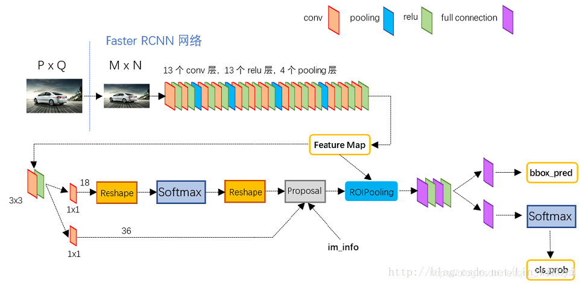

Fast R-CNN 等模型优化了监测网络，但在 Selective Search 选定 regional proposal 的时候效率太低，于是 Faster R-CNN 提出 RPN 直接卷积特征图预设锚框，把预设部分合并原来的 Fast R-CNN 的检测部分放在一起训练，极大提升了效率与精度。
端到端训练：整个系统从输入到输出所有步骤都是可训练且联合优化的。
目前获取 regional proposal 的最流行的方法是 selective search，它的核心是贪心算法。
先用图像分割算法把图片分割为一些小超像素（即一些颜色和纹理等底层特征相似的部分）。对于所有相邻的超像素对，找出相似度最高的两个区域（贪心）合并为新区域，移除这两个区域的所有相关项，把新区域和相邻区域纳入运算，一直循环。
这种运算明显是在 CPU 上跑的，算法本身和不能多线程运算都决定了它慢（CPU 上 2s/图），拖累了整个模型的速度；而且贪心容易陷入局部最优，也处理不了复杂的图像。
新方法 edgeboxes 稍微好一点，但是因为在 CPU 上跑，并且不能结合语义，所以精度效率都不好。
如果实现为在 GPU 上面跑呢？但是不把它和后面的 detection network 架设到一起共享权重，好像浪费了；并且发现 CNN 提取的特征还可以帮助生成 regional proposal ，所以 RPN 就这样干了。
目标检测时多尺度处理是一个重要的部分。常见的三种处理关系：
Faster R-CNN 采用第三种。
Faster R-CNN 由两个部分组成。一个是 Fast R-CNN 的预测模块，一个是 RPN。RPN 就好像“注意力机制”一样提醒预测模块要注意什么，预测出来的结果反向传播时又能够同时训练预测模块和 RPN 的性能。
用于特征提取的卷积层是被共享的，然后再分支。
生成候选区域时，用一个 （通常取）卷积层去对特征图卷积，然后再用两个 卷积层分离特征，流入回归分支和分类分支。

层滑动的时候，会以滑动窗口为中心，生成若干个锚框（这些锚框可以被映射回原图，它们大致捕获了图像的特征）。锚框的个数如下：
在预测前，